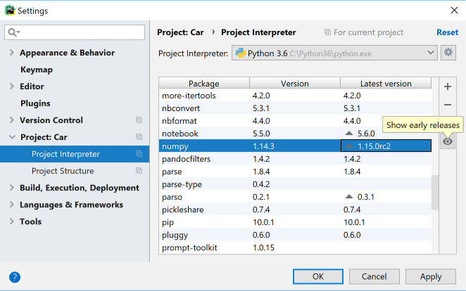

If you want to update a package for your project interperter to any pre-release version (such as beta or release candidate), click Show early releases in the Project Interpreter dialog (Settings/Preferences | Project | Project Interpreter), then proceed with package updating.
